Oh Tidepool for iPhone
The SoCal Tidepool Guide
Every shore gets its own call: go, use care, or wait, from that site's own tide and surf limits. Then meet the 91 animals and plants you might find there, each with a short cartoon for kids.
Free on iPhone.
Cabrillo National Monument Tidepools Right now
Good time to visit
The tide is below this site's 1.5 ft limit and surf is under its 3 ft limit.
- Tide now
- 0.4 ft
- Sea
- 61°F
- Next low
- 3:42 PM
One clear call for each shore
A pool that is open at 1.5 ft at one reef can be under water at another. Oh Tidepool checks each site against its own researched tide and surf limits, so the colour you see is about that shore, not the whole coast.
Good time to visit
Low enough tide and calm enough surf for this site.
Low tide, but use care
The pools are open, but surf is over the site's limit. Watch the waves.
Not recommended right now
The tide or the shore conditions say wait for a better window.
Pools under water
The tide is too high to see the pools yet. The card says when the next low comes.
Official word comes first. Closures, advisories and posted restrictions override the colour, and the card shows the notice with its source.
Meet 91 Southern California locals
The Life tab covers sea stars, octopuses, nudibranchs, fish, sharks and rays, birds, seals and whales you might see from the shore. Each has an illustration, a short sourced fact sheet, and a cartoon for kids.
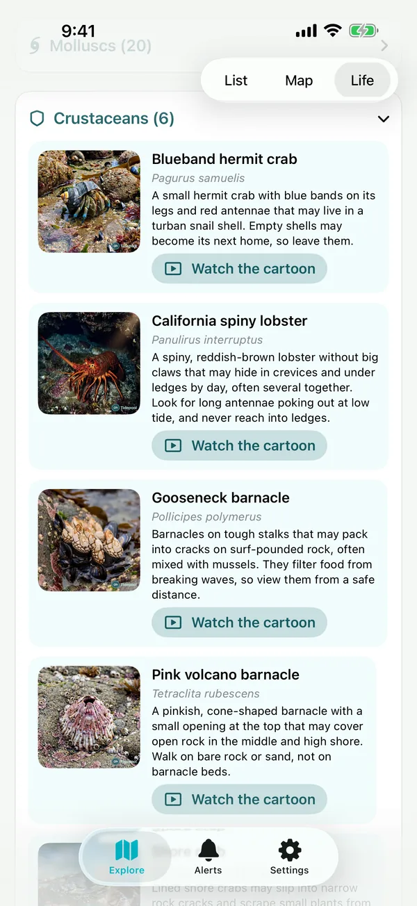
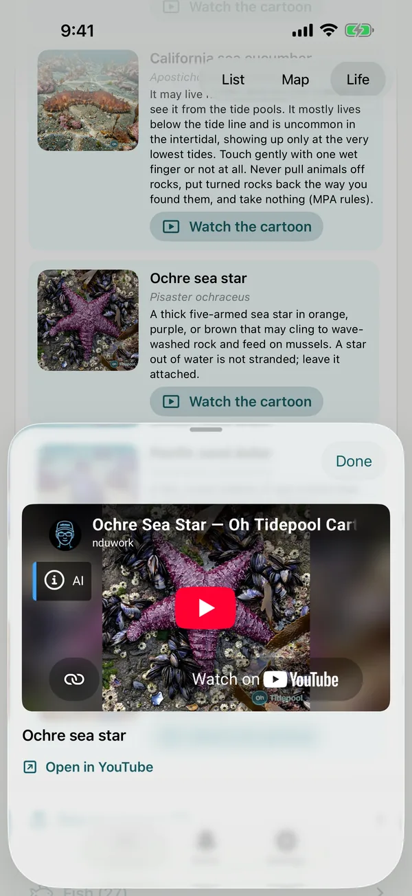
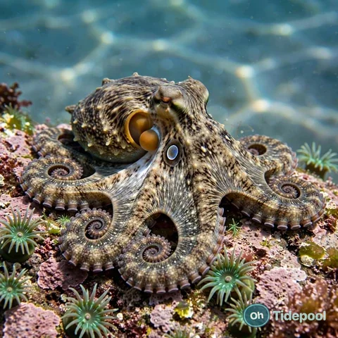
California two-spot octopusWatch the cartoon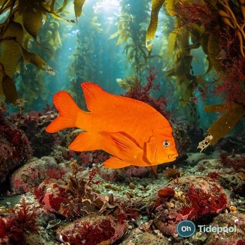
GaribaldiWatch the cartoon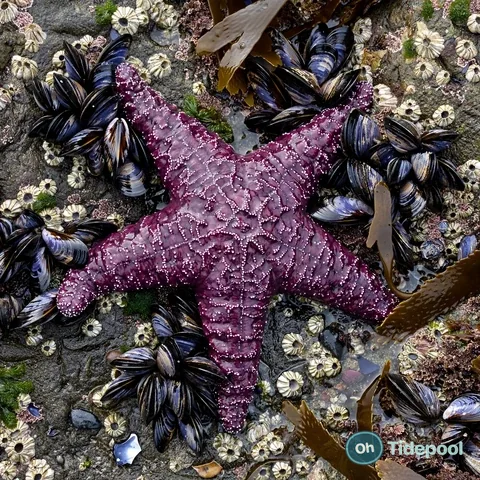
Ochre sea starWatch the cartoon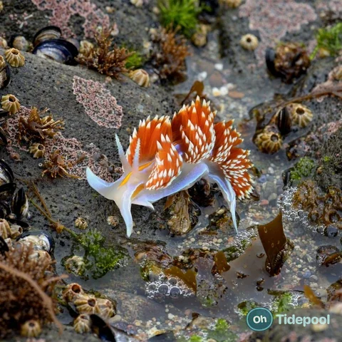
Opalescent nudibranchWatch the cartoon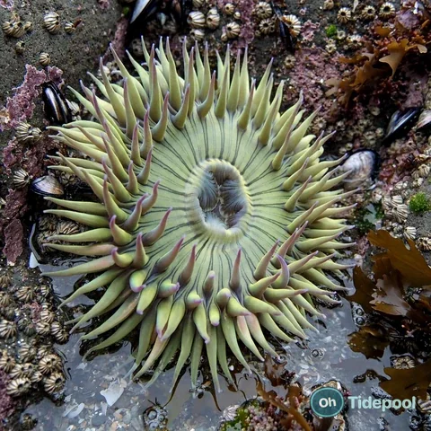
Sunburst anemoneWatch the cartoon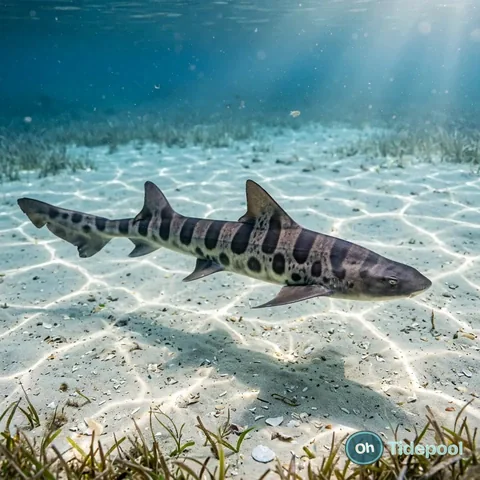
Leopard sharkWatch the cartoon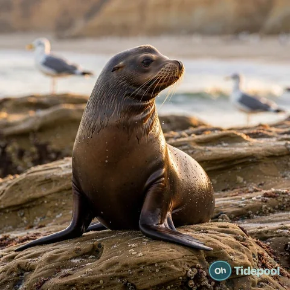
California sea lionWatch the cartoon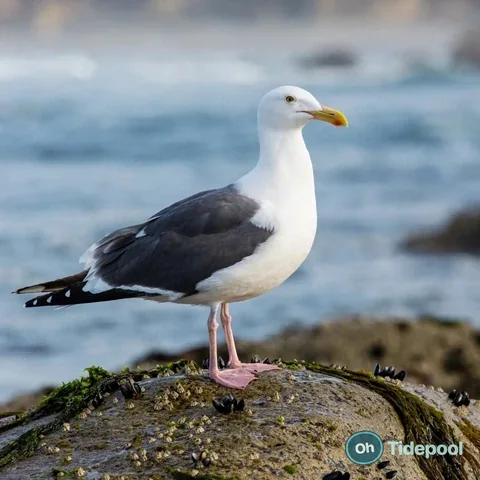
Western gullWatch the cartoon
Species illustrations are AI-generated images, not photographs; cartoons play on YouTube. Image credits
Park close, then find the rocks
Each site lists its parking lots with notes from park and city sources, and every lot has its own Directions link. The shoreline map then shows which rock is out of the water at each tide level, so you know where the reef is before you walk down.
Rocky-shore outlines come from the California Aquatic Resources Inventory.
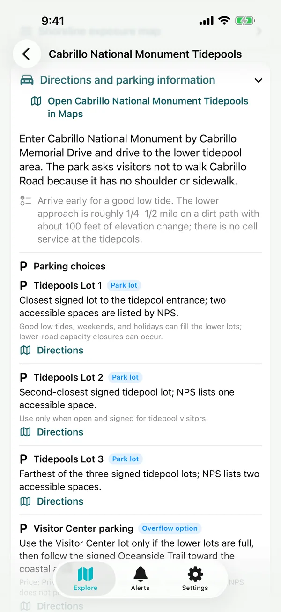
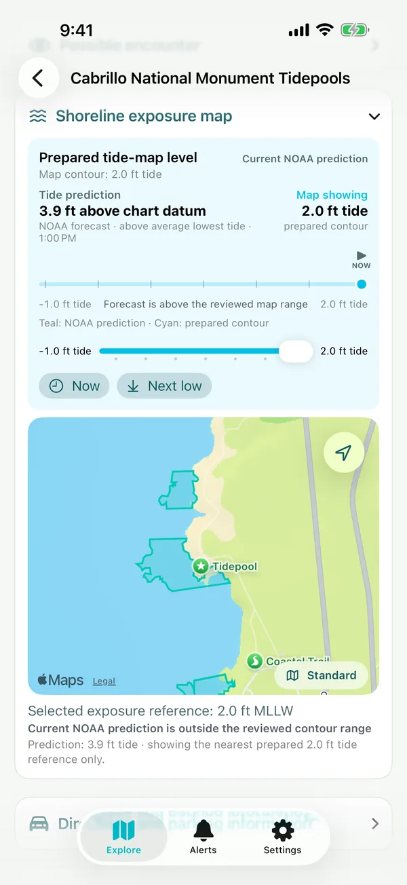
See the app
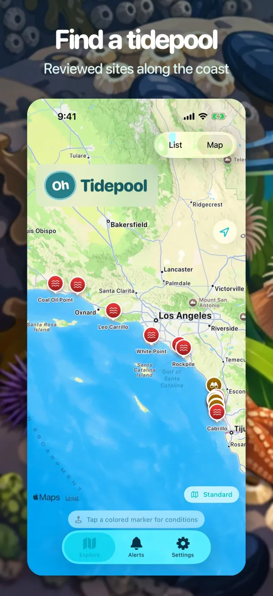
Explore tidepool sites
18 researched sites from Goleta to Point Loma, with access notes, hazards and parking.
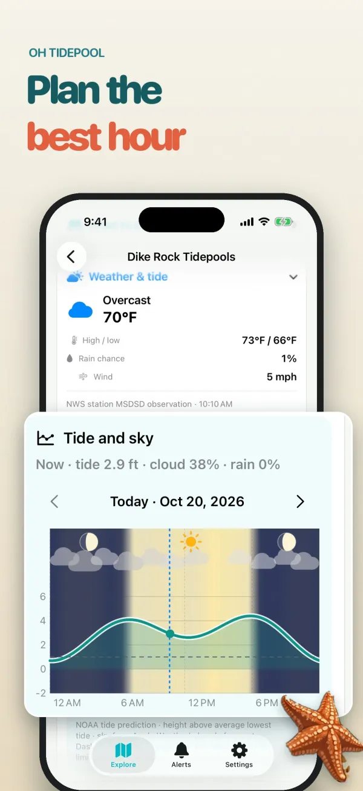
Know the conditions
Tide now, sea temperature and the next low from NOAA and other public sources.
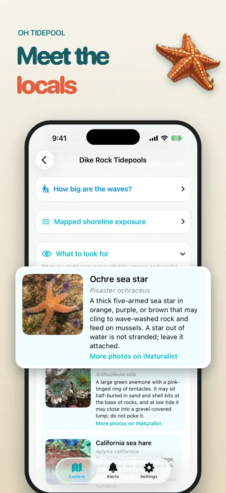
Learn what lives there
Each site lists its locals, most common first.
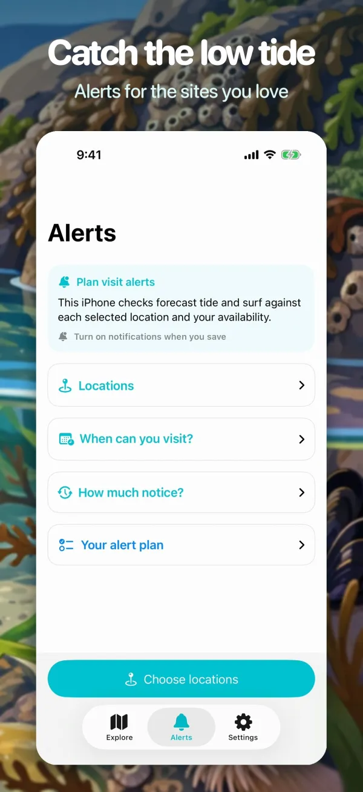
Get low-tide alerts
A heads-up when a good low-tide window is coming at your sites.
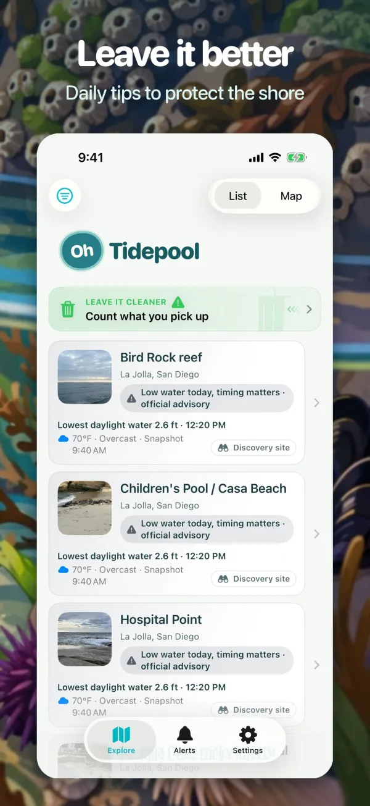
Leave it better
Tips and volunteer days at the top of the Explore list.


Stay safe
The ocean can be dangerous. Watch the waves, never turn your back on the sea, and follow posted rules and closures. Oh Tidepool is a planning aid, not a safety guarantee: always check local conditions and official guidance before you go.
In return, we ask you to
- Explore responsibly. Don't pick up and take home souvenirs. Tidepools are for everyone, so leave nature undisturbed.
- If you see trash, plastic, or bottles, carry them to the nearest trash can. They can harm the animals and plants that live there.
- Report misconduct, and when it is safe, try to stop people from damaging the habitat.
- Read the tips at the top of the app to learn how we can better protect the environment and save biodiversity for future generations.
- Enjoy your time at the tidepool!
New sites and regions are added over time.
Oh Tidepool · free on the App Store